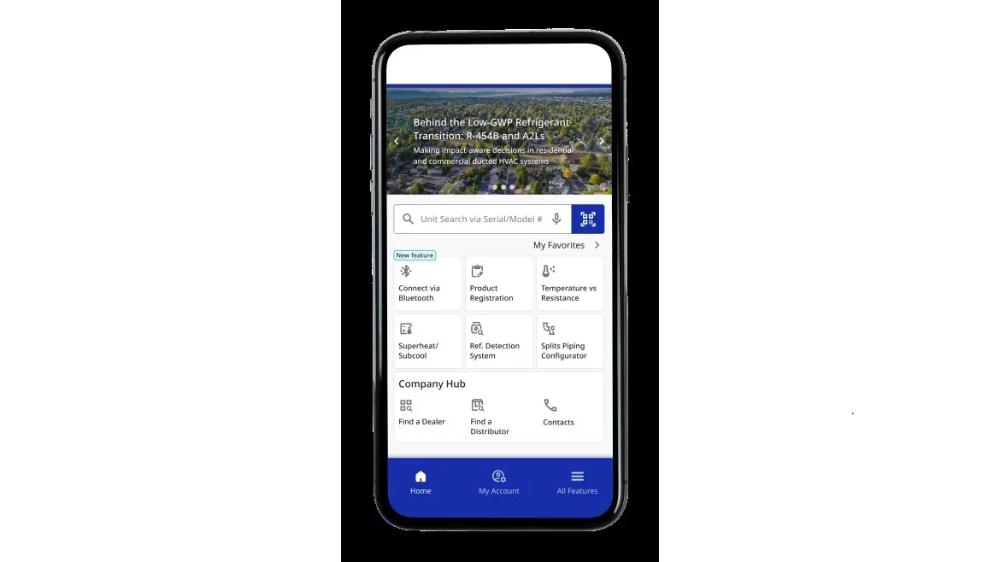

Sharma Tech — Construction / Engineering / Tech News
Edition No. 5 — Thursday, November 19, 2026 (ET)
Daily edition for Sharma Electric & HVAC (Florida electrical + HVAC subcontractor). News window: Wed Nov 18, 5:00 AM ET – Thu Nov 19, 5:00 AM ET, widened to 72 hours only for items not in prior editions. Updates to earlier stories are labelled as updates. Prices are stated only where a source publishes one. Photos are pulled from the articles cited, and each PHOTO line names its source page.
At a Glance
- Starts up, permits down: October housing starts rose 9.9% to a 1.309 million annual rate and single-family starts rose 4.0% to 864,000 in Census/HUD data released Wed Nov 18 — but building permits fell 7.4% to 1.295 million and single-family permits fell 8.7% to 772,000, down 12.9% year-over-year. NAHB calls the single-family starts pace the year's second-slowest, and Census flags the starts gain itself as not statistically significant.
- Construction tech: Suffolk completed Gilead Sciences' Foster City research center leaning on four contech tools at once — OpenSpace for 360-degree progress tracking, Dusty Robotics for automated layout, Kaya AI for procurement lead tracking and Alice Technologies for sequencing — a worked example of the stack large GCs now bring to complex jobs.
- Labour market: estimators now out-earn superintendents at hire — a median $117,500 against $110,000, with estimator pay up 15% in a year — in recruiter Amundson Group's Q3 2026 report (Nov 18), set against 298,000 open construction jobs and data-center construction spending up 90% year-over-year.
- Florida: WWE is proposing a $100 million, 98,000 sq. ft. Performance Center and event facility in downtown Orlando (22 S. Terry Ave), requesting $7 million from the Orlando Downtown Trust Fund; multiple approvals are still required. In Sarasota, Kolter Urban has named Moss general contractor for the 20-story 1000 Boulevard of the Arts tower and the team is mobilizing on site.
- Electrical spotlight product (new today): Enphase IQ Bidirectional EV Charger — a DC bidirectional charger that installs with an IQ Meter Collar and turns a compatible EV into home backup (V2H) and a grid exporter (V2G) at up to 11.5 kW, showcased at RE+ 2026 (Nov 17–19) under Enphase's announcement of Mon Nov 16, 2026; pilots expected Q4 2026, volume shipments Q1 2027 — a pipeline product, not yet shipping.
- HVAC spotlight product (new today): Bosch GoTemp Home app + GoTemp Pro Remote Support — Bosch Home Comfort Group's expanded GoTemp platform, reported Wed Nov 18, 2026: a new homeowner app launched alongside the SHC350 Smart Home Control thermostat, and a contractor-side remote support feature that lets an on-site tech share live system data by Bluetooth with remote support for troubleshooting.
Product Spotlight
A cool new electrical product and a cool new HVAC product every weekday — fresh picks Monday–Friday; weekends carry Friday's picks.
2.1 — ELECTRICAL SPOTLIGHT: Enphase IQ Bidirectional EV Charger
Maker: Enphase Energy, Inc. (NASDAQ: ENPH), Fremont, California · Released: Mon Nov 16, 2026 — Enphase's RE+ 2026 showcase announcement (Globe Newswire, Nov 16, 2026), with the charger demonstrated live at RE+ 2026 in Las…
Why it's cool: This is the EV charger as a service-entrance job, not an accessory: meter-collar islanding, panel-capacity load balancing, and backup without a separate battery are all work that runs through the electrical contractor. For Florida homeowners asking about outage backup, "your car can run the essentials — and here's the charger and collar…
Read the full story →2.2 — HVAC SPOTLIGHT: Bosch GoTemp Home App + GoTemp Pro Remote Support (GoTemp platform expansion)

Maker: Bosch Home Comfort Group (Bosch Thermotechnik) — the group behind the YORK, Luxaire,… · Released: Wed Nov 18, 2026 — reported by ACHR News on Nov 18, 2026; both apps are available now in the App Store and on Google Play.
Why it's cool: This is the service-call workflow Sharma's HVAC side lives in: the tech at the unit streams real diagnostics to a senior tech or factory support while still on site, and the homeowner side — schedules, performance tracking, demand response — is handled in the same platform the equipment already reports to. It also lands on brands Sharma…
Read the full story →Section 1 — Top construction / engineering / tech stories

1.1 — October starts rebound, but permits fall sharply — Census/HUD data released Wed Nov 18, 2026
What happened: Overall housing starts increased 9.9% in October to a seasonally adjusted annual rate of 1.309 million units, according to the U.S. Department of Housing and Urban Development and U.S. Census Bureau report released…
Why it matters to Sharma: For Sharma's builder work, read permits, not the starts headline: a thinner single-family permit pipeline in the South argues for keeping bid volume up and schedules flexible rather than counting on a starts recovery. No outreach on research alone. Source:…
Read the full story →1.2 — Suffolk builds Gilead's research center on a four-tool contech stack — Construction Dive, Wed Nov 18, 2026
What happened: Construction Dive reported Wed Nov 18, 2026 that Suffolk Construction has completed Gilead Sciences' Research Center in Foster City, California (announced Tuesday by Suffolk; part of Gilead's $847 million Foster…
Why it matters to Sharma: Directional for Sharma's commercial side: on GC jobs run this way, a subcontractor's own photo and checklist record — the SHARMATRACK discipline — is what plugs into the GC's documentation stack. Crews should expect layout robots and 360-degree capture on…
Read the full story →1.3 — Oracle adds an AI assistant, a shared risk library and pull planning to Primavera Cloud — Wed Nov 18, 2026
What happened: Oracle announced Wed Nov 18, 2026 (Austin, Texas, via PR Newswire) new enhancements to Oracle Primavera Cloud (OPC), its planning and scheduling platform for engineering and construction: an AI help assistant…
Why it matters to Sharma: Awareness item for Sharma's commercial project work: when a GC runs OPC pull planning, Sharma's foremen will be asked for milestone-backward task commitments in that system. Nothing to buy or change today. Source: Oracle via PR Newswire, Nov 18, 2026 —…
Read the full story →1.4 — Estimators now out-earn superintendents at hire as data centers compete for builders — Amundson Group Q3 2026 report, Wed Nov 18, 2026
What happened: Construction recruiter Amundson Group published its Q3 2026 Construction Labor Market Report on Wed Nov 18, 2026 (Houston, via PR Newswire), drawn from the firm's own placements. Its headline finding: estimators…
Why it matters to Sharma: A costing signal for Sharma's own bid operation: the market value of good estimating is rising fast, which raises the payoff from Sharma's takeoff-and-estimate discipline (and the cost of losing it). It also helps explain GC-side pricing behaviour on…
Read the full story →1.5 — Skanska–Traylor Bros JV delivers the $1.6 billion Portal North Bridge — reported Wed Nov 18, 2026
What happened: Construction Dive reported Wed Nov 18, 2026 that the Skanska and Traylor Bros. joint venture has delivered the $1.6 billion Portal North Bridge in New Jersey, per Amtrak's Monday news release: Gov. Mikie Sherrill…
Why it matters to Sharma: No direct scope — Sharma does not work the Northeast Corridor. The transferable point is the prefab lesson: trades pulled into prefabrication early, rather than field-fitting late, is the same direction Florida commercial work is moving. Source: Construction…
Read the full story →1.6 — FLORIDA: WWE proposes a $100 million Performance Center in downtown Orlando — reported Wed Nov 18, 2026
What happened: WWE is seeking City of Orlando support for a proposed $100 million facility combining a training center, a live-event venue and a regional headquarters in downtown Orlando, reported Wed Nov 18, 2026 by eWrestling…
Why it matters to Sharma: Watch item only for Orange County; no outreach on research alone, and nothing here is a bid lead yet. Source: eWrestling, Nov 18, 2026 (reporting Orlando Business Journal / The Orlando Real) —…
Read the full story →1.7 — FLORIDA brief: Moss named general contractor for Sarasota's 1000 Boulevard of the Arts; team mobilizing — Nov 17–18, 2026
What happened: Kolter Urban has selected Fort Lauderdale-based Moss as general contractor for 1000 Boulevard of the Arts in Sarasota's Quay waterfront district — a 20-story tower combining 117 luxury condominiums with a Hyatt…
Why it matters to Sharma: Market signal only; no outreach on research alone. Source: Business Observer, Nov 17, 2026 — https://www.businessobserverfl.com/news/2026/nov/17/general-contractor-sarasota-hotel-project/ ; Florida YIMBY, Nov 18, 2026 —…
Read the full story →Not confirmed — excluded from the confirmed items above
Spelsberg Abox 040-L/S junction box — resolved on its true date, not used as a spotlight. Held as not confirmed in Edition 4. Since then: Design Solutions published the launch item on Mon Nov 16, 2026 and Engineer News Network on…
Read this section in full →About the reporting window
Confirmed in-window (Nov 18, 5:00 AM – Nov 19, 5:00 AM ET) items: 1.1, 1.2, 1.3, 1.4, 1.5, 1.6, and the Bosch GoTemp spotlight (all Nov 18). Items 1.7 (Business Observer Nov 17, Florida YIMBY Nov 18) and the Enphase spotlight (announced Nov 16, demonstrated at RE+ Nov 17–19) sit inside the 72-hour widening, with their true dates stated wherever they appear. Nothing from Editions 1–4 is repeated as new; Edition 4's HMI story is referenced only as context inside item 1.1.